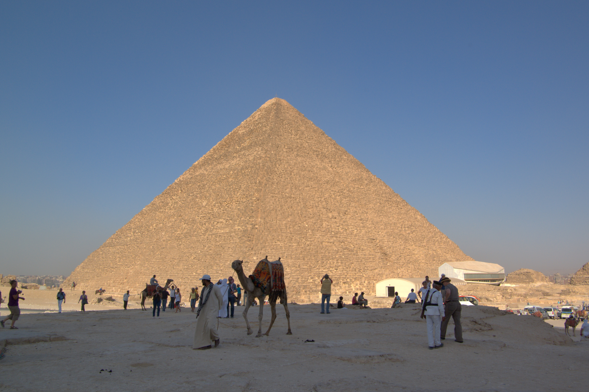

Люди здавна складали списки чудес світу. Найчастіше такі списки обмежувалися сімома лауреатами, наслідуючи давньогрецькі сім чудес світу. Приблизно в III столітті до н. е. сформувався класичний список з семи чудес світу:

СІМ ЧУДЕС СТАРОДАВНЬОГО СВІТУ
- Піраміда Хеопса
- Висячі сади Семіраміди
- Статуя Зевса в Олімпії
- Храм Артеміди
- Мавзолей у Галікарнасі
- Колос Родоський
- Александрійський маяк
Нажаль постійні загарбницькі війни, руйнівні сили природи та вік взяли своє і до наших чисів збереглась тільки

Піраміда Хеопса
Нові сім чудес світу
Оскільки більшість з чудес світу до нашого часу не збереглася липня 2007, в день «трьох сімок», в столиці Португалії Лісабоні було вирішено визначити нові сім чудес світу. Ними стали: